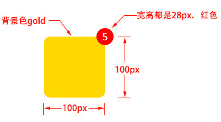

CSS定位
文档流 文档流，是指盒子按照html标签编写的顺序依次从上到下，从左到右排列，块元素占一行，行内元素在一行之内从左到右排列，先写的先排列，后写的排在后面，每个盒子都占据自己的位置。
关于定位 我们可以使用css的position属性来设置元素的定位类型，postion的设置项如下：
- relative 生成相对定位元素，元素所占据的文档流的位置保留，元素本身相对自身原位置进行偏移。
- absolute 生成绝对定位元素，元素脱离文档流，不占据文档流的位置，可以理解为漂浮在文档流的上方，相对于上一个设置了定位的父级元素来进行定位，如果找不到，则相对于body元素进行定位。
- fixed 生成固定定位元素，元素脱离文档流，不占据文档流的位置，可以理解为漂浮在文档流的上方，相对于浏览器窗口进行定位。
- static 默认值，没有定位，元素出现在正常的文档流中，相当于取消定位属性或者不设置定位属性。
- inherit 从父元素继承 position 属性的值。
定位元素的偏移 定位的元素还需要用left、right、top或者bottom来设置相对于参照元素的偏移值。
定位元素层级 定位元素是浮动的正常的文档流之上的，可以用z-index属性来设置元素的层级
伪代码如下:
.box01{
......
position:absolute; /* 设置了绝对定位 */
left:200px; /* 相对于参照元素左边向右偏移200px */
top:100px; /* 相对于参照元素顶部向下偏移100px */
z-index:10 /* 将元素层级设置为10 */
}
定位元素特性 绝对定位和固定定位的块元素和行内元素会自动转化为行内块元素
理解练习 1、制作如下布局： 
2、固定在顶部的水平居中的菜单
3、相对于浏览器窗口水平垂直居中的弹框